Through this poem, Vyloppilli presents how humans shaped their environment and started
agriculture.
In previous classes, we have already discussed the beginnings of agriculture and the
transformation from food gathering to food production, haven't we?
In earlier times, it was land and human labour that people used for agricultural production.
To increase production and to make the land fit for cultivation, intensive labour was
required. Eventually, sharp and strong tools made of iron were used to prepare more land
for cultivation. This helped to increase food production.
What could have been the circumstances that led to the spread of agriculture? Discuss.
Beginning of Trade
Nishan is looking at the pictures related to human progress, exhibited in the Social Science
Lab at his school.
പണ്ട്് പിതാാമഹർ കാാട്ടിിൻ നടുുവിിൽ
പണ്ട്് പിതാാമഹർ കാാട്ടിിൻ നടുുവിിൽ
ചിിന്തകളുുരസിിടുുമക്കാാലംം
ചിിന്തകളുുരസിിടുുമക്കാാലംം
വന്നുു പിറന്നിതു ചെ�ന്നിിണമോ�ോലുംം�
വന്നുു പിറന്നിതു ചെ�ന്നിിണമോ�ോലുംം�
വാളുു കണക്കൊ�ൊരുു തീനാളം!
വാളുു കണക്കൊ�ൊരുു തീനാളം!
........................................................................
........................................................................
കാാടും�ം പടലുംം� വെ�ണ്ണീീറാക്കി-
കാാടും�ം പടലുംം� വെ�ണ്ണീീറാക്കി-
ക്കനകക്കതിിരിനു വളമേ�കി
ി
ക്കനകക്കതിിരിനു വളമേ�കി
ി
കഠിിനമിരുമ്പുു കുഴമ്പാക്കി, പല
കഠിിനമിരുമ്പുു കുഴമ്പാക്കി, പല
കരുുനിര വാർത്തുു പണിക്കേ�കിി!
കരുുനിര വാർത്തുു പണിക്കേ�കിി!
പന്തങ്ങൾ
പന്തങ്ങൾ
വൈൈലോോപ്പിിള്ളിി ശ്രീീധരമേനോോോൻ
വൈൈലോോപ്പിിള്ളിി ശ്രീീധരമേനോോോൻ
6
From Agriculture to Industry
Page 75
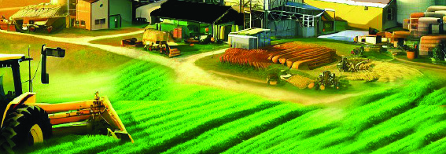
Page 76


Social Science Class VI
Social Science Class VI
76
Part I
With the expansion of agriculture, production increased which led to surplus production.
People saved the surplus food items for future use. Eventually, they not only stored the
food items but also handed it over to those in need.
What was the practice of exchanging goods for other goods known as?
Earlier this practice of exchange existed only locally. Later it spread across regions.
Gradually for the exchange of goods, coins made of
copper, silver and gold were used as a medium of
exchange. Handicrafts, textiles and spices were the
main items of domestic trade. Later on, the exchange
of goods also began with distant regions. This led to the
List the findings of Nishan's observations in their chronological order.
•
•
•
•
The making of weapons and tools
The expansion of agriculture
The sale of commodities
The exchange of
commodities
Trade
Trade is the process of
exchanging goods or
services for reward.
Fig 6.1
Page 77


77
Social Science Class VI
Social Science Class VI
From Agriculture to Industry
formation of new trade routes. Silk Route which maintained the commercial relationship
between the east and the west of Asia and between Asia, Europe and Africa was an
example for this.
Economic Activities
We have discussed the progression from agriculture to trade. Later, the activities related
to agriculture and trade were aimed at generating income.
Haven't you noticed the words of Kautilya, the minister of the king Chandragupta Maurya?
He points out that it is the economic activity that determines the progress of any society.
What are economic activities?
''The root of prosperity is economic activity, the lack of it brings material
distress. The absence of fruitful economic activity endangers both
current prosperity and future growth''.
Arthashastra
Write a note on the expansion of agriculture leading to the formation of cities
using the given flowchart.
Expansion
of
agriculture
Surplus
production
Storage of
goods
Exchange
of goods
Trade
centres/
cities
Fairs/
Markets
The activities that generate income are economic activities. These activities are
made possible through the process of production.
Kautilya
Page 78
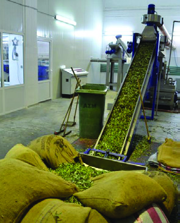


Social Science Class VI
Social Science Class VI
78
Part I
Observe the pictures.
Fig 6.2
The primary sector
includes activities that
directly utilise natural
resources. This sector
is
also
known
as
Agricultural sector due
to the importance given
to agriculture.
Examples: Agriculture,
Forestry, Mining,
Fisheries, etc.
Primary Sector
Classification of Economic Activities
Secondary Sector
Tertiary Sector
Tea
Tea
Packet
Packet
Tea is one of our favourite beverages.
Tea leaves are needed to prepare tea. How do these tea leaves reach our homes?
The leaves are plucked from the tea plants. They are taken to the factory and are processed
into tea powder. This tea powder is packed in pouches and transported by vehicles to
shops near our homes.
We have discussed the economic activities in which the tea from tea plantation reach
our hands. Such economic activities can be classified into three sectors based on their
common characteristics.
The secondary sector
involves activities that
create new products
using raw materials from
the primary sector. This
sector is also known as
Industrial sector because
it gives importance to
industries.
Examples: Production
of electricity, textile
industry, construction,
etc.
The tertiary sector is
the sector that provides
support to economic
activities in the primary
and secondary sectors.
It includes all kinds of
service activities, such
as the storage and
distribution of products
from the primary and
secondary
sectors.
Therefore, this sector is
also known as Service
sector.
Examples: Banking,
healthcare,
communication, etc.
Page 79

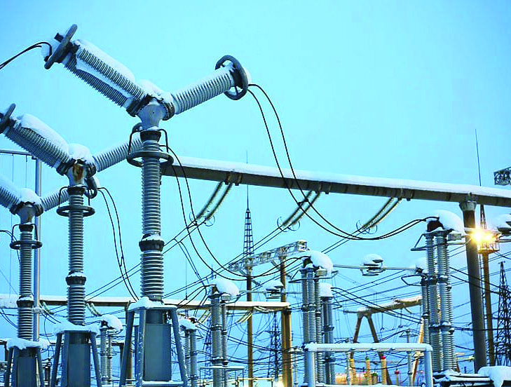

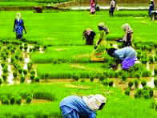
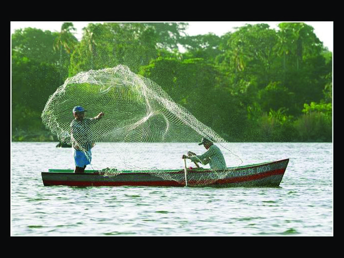


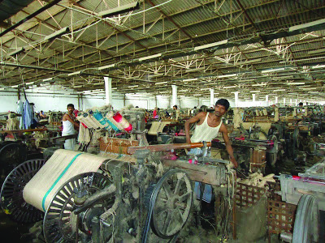
79
Social Science Class VI
Social Science Class VI
From Agriculture to Industry
Fig 6.3
Economic activities in these three sectors lead to the progress of a country.
Observe the pictures.
Mining
Fishing
Health sector
Industry
Construction
Agriculture
Production of electricity
Communication
Banking
Primary Sector
Secondary Sector
Tertiary Sector
•
•
•
•
•
•
•
•
•
List the economic activities shown in the above pictures under the following
three categories:
Page 80


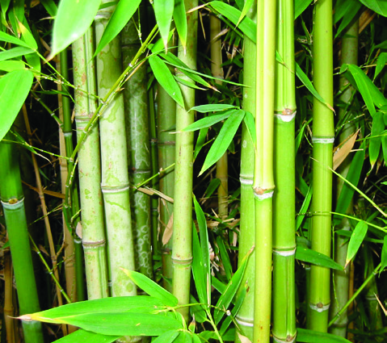
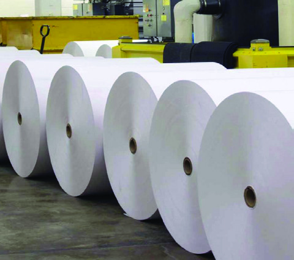

Social Science Class VI
Social Science Class VI
80
Part I
Growth of Industries
An autobiography
From a hillside rubber tree soaked in rain, crowned with snow and warmed by
sunlight, it was as latex that I took my first form. I was collected, mixed with
acid and shaped into sheets. The dried sheet was thickened through the process
of vulcanization. I became stronger when I was pressed by the heavy mould of
footwear. In the workshop with the sound of hammers and the
scent of leather and rubber I got transformed into footwear. I was
beautified and taken to the market. It was at the market that I
made friends with humans. I became a part of several people's life
journeys. On bustling city streets, in quiet villages, along mountain
paths, and inside workplaces, I travelled carrying my owner's feet.
Rubber Footwear
Haven't you read the autobiography of the rubber footwear?
Similarly, prepare an autobiography that includes the production stages of
any other product you use and present in the class.
Now we have become familiar with many examples of how raw materials collected from
agricultural sector are used to make various useful products for people.
In the early days, it was food crops that were mostly cultivated. Gradually, raw materials
needed for industrial development began to be cultivated. This led to the expansion of
agricultural crops such as cotton and jute. The industrial sector developed by using natural
resources and raw materials obtained from agriculture.
Bamboo
Paper Roll
Notebook
Fig. 6.4 (A)
Page 81
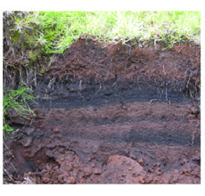

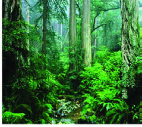


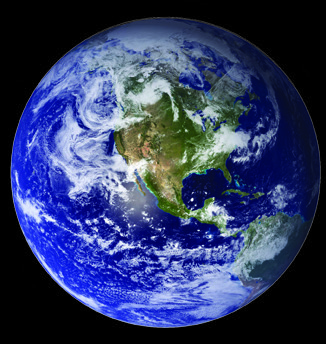
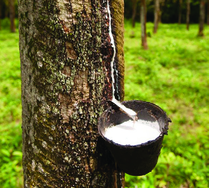


81
Social Science Class VI
Social Science Class VI
From Agriculture to Industry
Fig 6.4 (B)
Latex
Rubber Sheet
Tyre
Observe the pictures.
It can be realised from the pictures that the agricultural sector and the industrial sector
are interconnected. The tertiary sector provides the services required for the primary and
secondary sectors. Hence all these three sectors are interconnected. Production becomes
possible as a result of economic activities that take place in all the three sectors.
Let's see what production is.
Production and Factors of Production
Production is the process of making goods and services needed for people. Production
happens as a result of the action of several factors. The various elements that help
the production are called factors of production. These are land, labour, capital, and
organisation. Let us become familiar with each of these in detail.
Land
Water, air, sunlight, soil, mined minerals and so on are referred to as land in production
process. The natural resources from the Earth's surface, atmosphere, and interior are
used for production.
Soil
Coal
Forest
resources
Water
Wind
(Windmill)
Rock
Fig. 6.5
Page 82

Social Science Class VI
Social Science Class VI
82
Part I
Labour
The use of manpower of workers in the production process is called labour. Workers
become part of the production process using their physical and intellectual capabilities.
Those who get rewarded for their work are considered as labourers.
Haven't you met the people in various employment in your locality? Find out the
characteristics of their employment.
Capital
The production process of any product requires
capital. Capital refers to the wealth and resources
used to produce goods and services. Factories,
buildings, machineries, raw materials, vehicles,
computers, and wages for workers are all part of
capital.
Organisation
Organisation is the co-ordination of factors of
production such as land, labour and capital. Those
who work for this are known as organisers/entrepreneurs. Forming a new business idea,
raising the necessary capital, and implementing that idea are part of organisation.
When the factors of production work together, production takes place and products are
made. Factors of production such as land, labour, capital, and organisation require reward.
Let's check what they are.
Identify other natural resources used in the production process, in addition to
those shown in the pictures, and complete the list.
•
Petroleum
• Metals
•
•
Forms of Capital
Capital takes many forms, such
as financial capital (money,
investment), human capital (skill,
knowledge), physical capital
(machinery, infrastructure),
and natural capital (resources,
environment).
Page 83


83
Social Science Class VI
Social Science Class VI
From Agriculture to Industry
Factors of production
Reward
Land
Rent
Labour
Wages
Capital
Interest
Organisation
Profit
Complete the given worksheet on production and factors of production.
Worksheet
Uses physical and intellectual labour
The Labourer
The reward for capital in production process
............................
The factor of production that provides the necessary physical
infrastructure for production.
............................
A person who takes the leadership in implementing a new
business idea
............................
In the production process, the factor in which rent is the
reward
............................
From Producer to Consumer
Observe the picture.
I need some
things. Chart paper,
ribbon, scale and
sketch pen.
Page 84
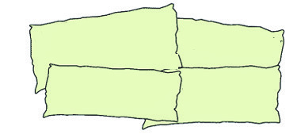

Social Science Class VI
Social Science Class VI
84
Part I
Adulteration in curry powder:
Products of leading companies
seized
Poor hygiene and high
adulteration: Over hundred
hotels shut down
400 kg of stale fish
seized and destroyed
Measurement fraud:
90 lakhs imposed as
fine in one month
Don't you buy and use things like this?
We use goods and services to fulfill needs like food, shelter, clothing, health, education
and entertainment.
Make a list of the goods and services you have used in your home in the
past week.
Consumption is the act of buying and using goods and services to meet human needs.
A consumer is a person who buys and uses any goods or services for a price or on
an agreement to pay for it.
"A customer is the most important visitor on our premises. He is not dependent on
us. We are dependent on him. He is not an interruption in our work. He
is the purpose of it. He is not an outsider in our business. He is part of it.
We are not doing him a favour by serving him. He is doing us a favour by
giving us an opportunity to do so''.
- Gandhiji
Haven't you realised the importance of a consumer from Gandhiji's words?
As consumers, do we receive this importance and consideration from stores and institutions
when we use goods and services? Discuss.
Observe the news headlines.
Have you noticed such incidents?
Page 85

85
Social Science Class VI
Social Science Class VI
From Agriculture to Industry
As consumers what all rights do we have while buying goods and using services?
Quality
Credibility
After-sales service
Accuracy in measurement
and weighing
Complete the worksheet below.
Indicators
Yes
No
Legally stamped Maximum Retail Price (MRP) of the products is
checked before purchasing.
When purchasing food items, it is ensured that the expiry date is not
over.
The product had the quality claimed in the advertisements.
Timely after-sales service is available for electronic items at home.
The product purchased had the quality appropriate for its price.
By completing the worksheet, haven't we realised what all things are to be noticed as a
consumer?
If the rights are denied to the consumer, one can approach the concerned government
departments and consumer courts. Consumer Disputes Redressal Courts exist at district,
state and national levels. Strict laws and consumer education are needed to prevent
consumers from being exploited. The Consumer Protection Act came into force in India
in 1986.
Prepare a poster as part of observing Consumer Day and display at class
level and school level.
Goods and services are essential for improving people's lives. They are produced using
natural resources, human labour and technology. Factors such as production, surplus
production, exchange systems, the impact of technology, and market growth influence
economic progress. The inter-relationship among the primary, secondary, and tertiary
sectors makes the economy dynamic.
Page 86

Social Science Class VI
Social Science Class VI
86
Part I
• Complete the concept map.
• Organise a seminar in class on the topic 'Production and Factors of
Production'. Collect data and present by forming into four groups: land,
labour, capital, and organisation.
• Organise an awareness class on 'Consumer's Rights' on behalf of Social
Science Club as part of observing National Consumer Day on 24th December.
• Prepare a digital album by collecting images showing the inter-relationship
among primary- secondary-tertiary sectors and display them in the class.
Extended activities
P
et
r
ol
e
u
m
,
C
o
al
,
M
e
ta
ls
P
et
r
ol
e
u
m
,
C
o
al
,
M
e
ta
ls
...
...
....
...
...
...
...
...
...
.
...
...
....
...
...
...
...
...
...
.
•..
...
...
...
...
...
....
...
...
...
....
.
...
...
...
...
...
...
....
...
...
....
..
.
• •
..
..
...
..
..
..
...
...
...
.
..
..
...
..
..
..
...
...
...
.
•
..
...
...
..
...
..
...
..
...
..
...
...
...
...
..
..
.
..
..
.
..
...
...
..
...
..
...
..
...
..
...
...
...
...
..
..
.
..
..
.
..
...
...
..
...
..
...
..
...
..
...
...
...
...
..
..
.
..
..
.
..
...
...
..
...
..
...
..
...
..
...
...
...
...
..
..
.
..
..
.
Air, S
u
n
lig
ht,
Win
d
Air, S
u
n
lig
ht,
Win
d
The Surface
The Surface
Land
Land
Resources